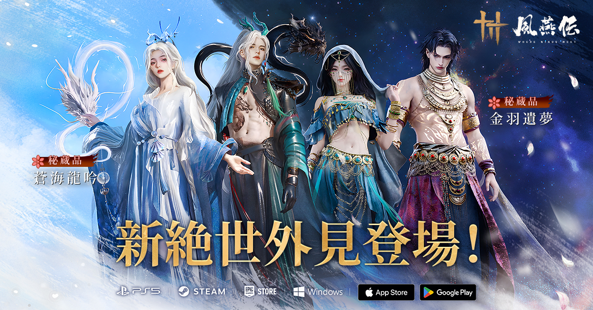

Project Digital Ink & Iron WHERE WINDS MEET
Establish quantum connection. 10th-Century convergence initiated. Your neural footprint shapes the Jianghu simulation.
Where Winds Meet drops you into China’s Five Dynasties and Ten Kingdoms period, a time of upheaval, change, and opportunity. It’s a true living world, filled with branching stories, side quests, and choices that matter.
Scroll to Descend
Neural Mapping: Active | Biometrics: Syncing
Shape Your Avatar.
Define Your Identity.
Dive into an insanely detailed neural-linked character creator. Sculpt every feature, define every detail, and truly become one with the Jianghu simulation.
DOWNLOAD FOR PC
Join 5M+ Wanderers | Free to Play
System Parameters:
BONE SCULPT: UNLOCKED
SKIN RENDER: 4K
LIMITS: OFF

See the Tech in action
Most games sacrifice detail for distance. We didn't. See the world as it was meant to be seen.
Download for Windows